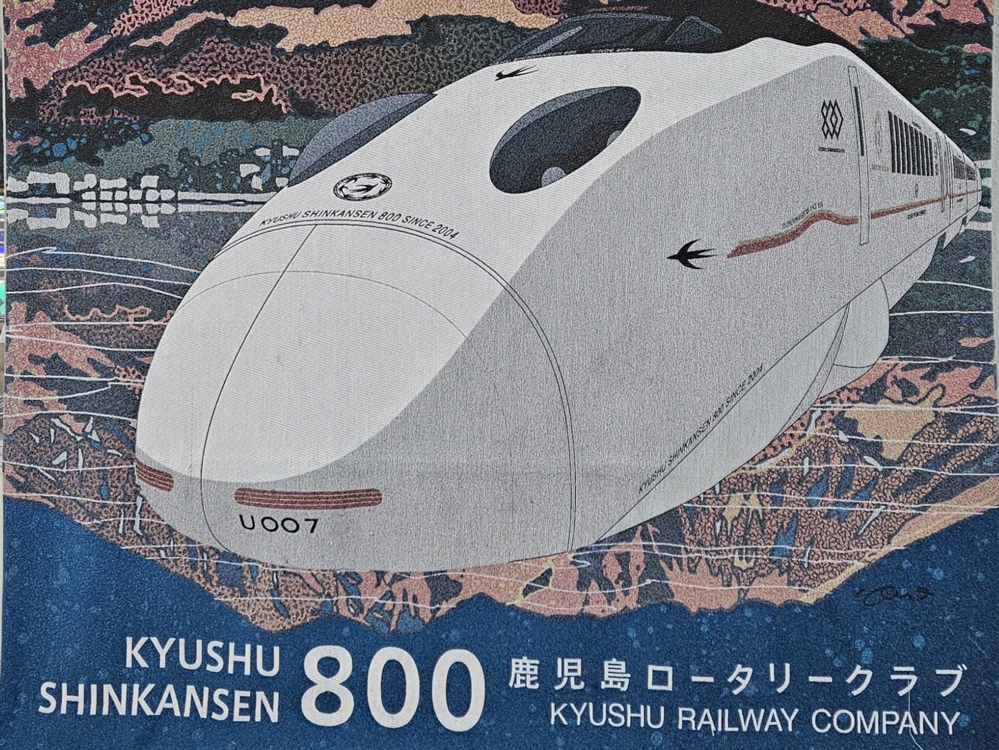
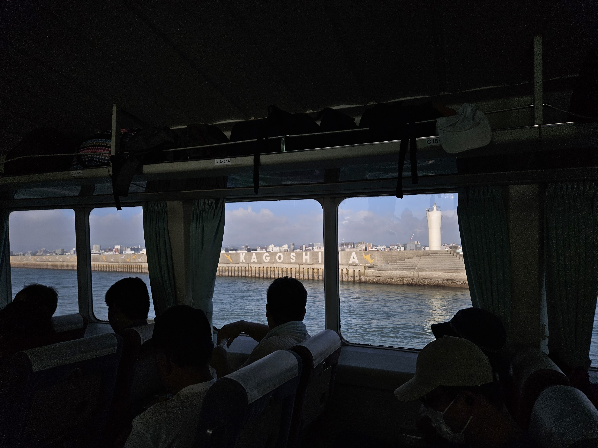
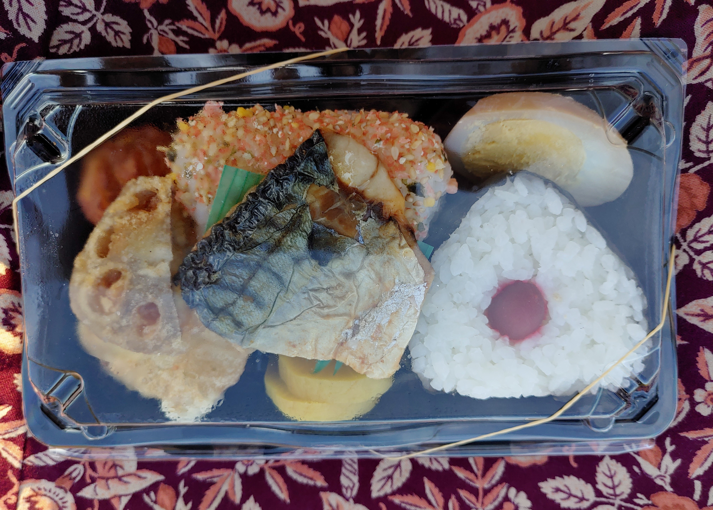

The island has much to offer, kayaking, moss covered forest, monkeys, deer, ruins, tea fields, open ocean swimming beaches and more. Depending on what you love will direct you to different parts of the island.
No matter how you get to the island you need to book in advance. We booked 2 weeks ahead and the ferry was already filling up.
We took JR all the way to Kagoshima. Then a ferry to Yakushima. We did this because we were already purchasing a JR pass thus it made more sense. You can also fly to Yakushima from Osaka or Fukuoka airport.
Traveling on the island is very daunting especially if you don't know any Japanese. Since the transportation system is not available on Google maps nor on the official Japan travel app! Having google translate and data is essential to coming to the island.
Luckily the transportation system is fairly simple to operate, it's a single bus line that basically loops around the island. It's not very frequent so ask for the bus time table while at the ferry or airport. Plan in advance if you are going to use the bus as your main mode of transportation. In addition, you can buy a single-use bus ticket, 1 day pass or 3 day pass. For our specific trip it probably would have made sense to use a single use ticket because we stayed for 2 nights and took the bus from ferry port to our hotel. The second day we had an all day tour that picked us up and dropped us off and the last day our host drove us to the ferry port. When choosing your option keep in mind you can't buy buss tickets everywhere. Using the bus as your only mode of transportation is not impossible but very difficult.
Taxis are readily available at the docked times but dissipate at every other time.
Lot's of travelers also decide to rent a car, if you are planning on staying on the island and don't book a tour with pick up and drop off this is a great option. Google maps is capable of giving directions for walking and driving. (Warning in Japan they drive on the left side of the road)
Finding accommodations on the island is fairly difficult we stayed at 民宿nicoichi. I would recommend a place that includes food (unless you plan on renting a car).
民宿nicoichi was a lovely place to stay, we booked through Airbnb. The Hosts were very kind. The food provided was incredible and such large portions. They provide lots of recommendations for the area. They even have books in the common area to read about Japan. The hosts were sweet to offer to drive us to our early morning departure from Anbo port. They even provided a bento box for us to take which was so thoughtful.
There is lots of food by Anbo port but not much the deeper you go into the island. If you have a car you can manage. There is no food near the tourist spots.
THERE ARE NO ATMS ON THE ISLAND. It is a very much cash based society. I was not prepared that there are no 7 elevens or convenience stores on the island, thus no ATMs that take international cards please come prepared before leaving Kagoshima.
Absolutely gorgeous waterfalls, extremely accessible it is a paved road to the base of the falls which is about a 5 min walk. the sight it breath taking could stay there all day. this picture was taken Aug 12 after a 3 days after a typhoon.
These falls are nice there are two platforms to view the falls. The first viewing platform is paved and is a 10 min walk from the parking lot the view is quite a distance from the falls. The second platform is down 1000 stairs and is slightly closer to the base but still a fair distance away from the falls. This one was nice but I didn't enjoy the view enough for it to be worth 30 min of steep stair climb.
There are so many beautiful sights to see on the island. Yakusgi land is definitely my highlight, it is one of the few forests that have massive 1000 yr old trees and moss covering everything.
We had a private tour guide because we weren't sure the level of hiking required for the forest and since we have no knowledge of Japanese, it's quite the risk to go without. The benefits of the private tour guide is that we could relax knowing we wouldn't get lost , not being stuck in the forest in the dark, easy transportation, and provided lunch. The cons were that I felt rushed at times and once we got to the forest the path was something I could have managed without the guide. Overall having the tour guide did really make the most of our 1 day trip and relieved us a lot of the stress of transportation and finding food.
My recommendation would be if you are a seasoned hiker and plan on hiking for 3 to 4hrs this would be easy for this specific location. Anything 6+ hrs to staying overnight I would recommend a guide for safety reasons.
Overall I loved Yakushima and it is totally worth a visit!!